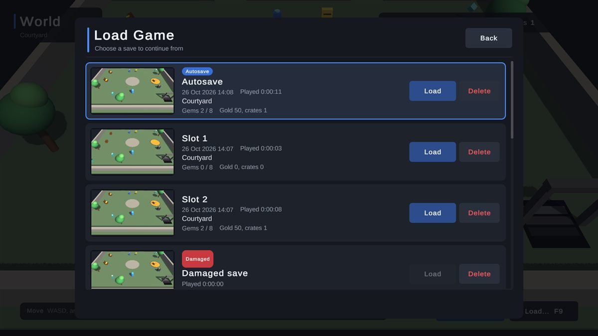
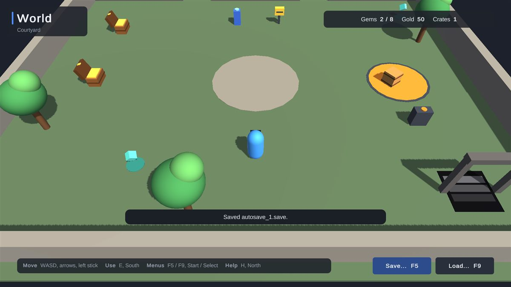
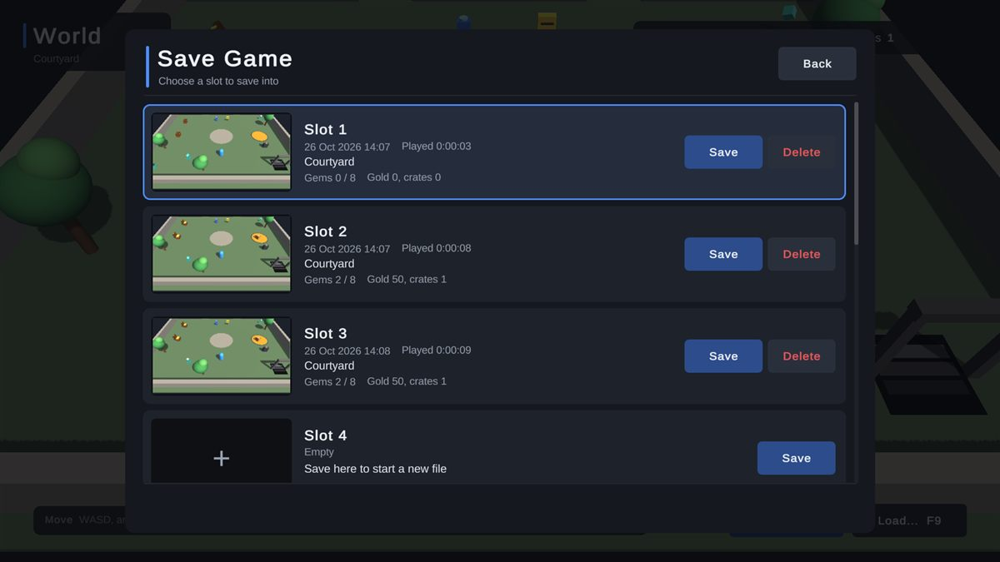
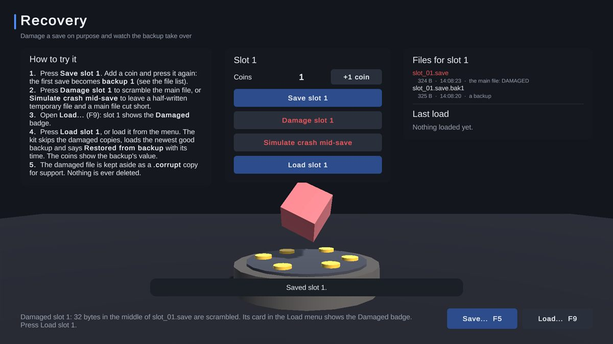

All In One Save Kit
Save your players' progress, the objects in your world and your game's settings, and bring them back. Make objects remember their state in five minutes, without code, with saves that recover by themselves from a crash or a damaged file.
- Unity 2022.3+
- Built-in, URP & HDRP
- No code needed
- Full C# source

How it works
A working save in three steps
-
Check the setup
The Start window checks what a first save needs and fixes each item with one click.
-
Pick what remembers
Add a Saveable to a door, a chest or a pickup and tick what it keeps: position, on or off, destroyed, physics, or any field of your scripts.
-
Press Play
F5 saves, F9 loads. A note in the Game view says what was saved, what came back and, if anything was skipped, why.
Features
Saving that works on day one and keeps working after release
World objects, no code
Saveable component- Tick what to keep: position, active state, destroyed state, physics and any serialized field.
- Spawned objects come back: objects created during play are re-created on load, with pool support.
- Links survive: references between saved objects and to registered assets are restored.
- Several scenes, additive scenes and objects that persist between scenes.
Values from scripts
SaveKit.Data.Set("gold", gold)SaveKit.Data.Get("gold", 0)- Numbers, text, vectors, colours, lists, dictionaries and your own classes
- Blocking,
asyncor callback calls
Saves that survive
- Each save is written to a temporary file, checked, then swapped in
- Rotating backups of every slot
- A damaged save loads from its newest good copy by itself
- A full disk leaves existing saves untouched
Slots and autosaves
- 10 slots by default, 1 to 99
- Autosaves on quit, on a timer or on scene change
- Optional quicksave and a separate settings file
- Readable JSON, optional compression and encryption
A finished save menu
- Slot cards with a picture, date, playtime and summary
- Autosave and damaged badges, confirmations
- Mouse, keyboard, gamepad and touch
- Restyle with one theme asset, translate with one text asset
Updates keep saves loading
- Each save records its version
- One small migration method upgrades old saves as they load
- Saves from a newer version are left untouched
See what was saved
Editor tools- Save Inspector: any save as a searchable tree, with its status and backups, and what a save would write while the game runs.
- Diagnostics: finds what would stop saves working and fixes most problems with one click.
- Help and support: copy your system info or a ready-to-paste bug report, straight from the editor.
Included demo scenes
Try it before you add it to your game
Four demo scenes show saving a world, the save menu, recovery from damaged saves and keeping old saves loading after an update.



Technical details
Built to be dependable
| Unity | 2022.3 LTS or newer (tested on 2022.3, 6000.3 and 6000.6) |
|---|---|
| Render pipelines | Built-in, URP and HDRP (the saving core has no rendering code) |
| Platforms | Windows 10 and 11, Mono and IL2CPP (tested) |
| Uses | Unity UI and TextMesh Pro, Unity's own packages, for the menu and the tools |
| Source | Full C#, no third-party code, no native plugins |
| Domain Reload off | Supported |
| Menu | Tools > All In One Save Kit |
Good to know
Limits, stated up front
- Windows is the only tested platform in 1.0.
- Encryption stops casual save editing. It is not anti-cheat: the key ships inside the game.
- Only fields Unity serializes can be ticked in the Inspector; anything else is saved from a script.
Status
- The kit is in its final checks before submission to the Asset Store. Its documentation goes up here the day it launches.
Hear the day it launches
Join the Romano Assets Discord for launch news, or ask a question about the kit now.
Support
Help with the Save Kit
Stuck, found a bug or have an idea? Pick whichever is easiest. Every message gets an answer.
More from Romano Assets
Other kits, built to the same standard
All In One Prefab Builder Kit
Turn any pack of prefabs into a world-building kit: snap, draw roads, scatter, fence, dress streets, settle with physics and check your scene, all from one window.
All In One Interaction Kit
Turn your own prefabs into doors, drawers, switches, pickups, keypads and puzzles, with prompts for every controller, a "why can't I interact?" debugger and optional multiplayer.
All In One Runtime Building Kit
Let players build bases and place furniture at runtime: turn your own models into build pieces in about ten minutes without code, snap them together through sockets, drag out rows and areas or stamp whole buildings, and see a plain reason whenever a spot is refused. Four ready-made themes, and every part of the HUD, preview, words and sounds can be changed or switched off.
All In One Game Settings & Menu Kit
A finished game front end: title screen, main menu, settings, pause, loading screen and dialogs, with key rebinding, accessibility, subtitles and three themes, ready for keyboard, mouse and gamepad.
All In One Surface Footstep Kit
Footsteps that sound like what your characters walk on, for any controller in 3D and 2D, with effects, footprints, AI hearing and a debugger that says why a step was silent.